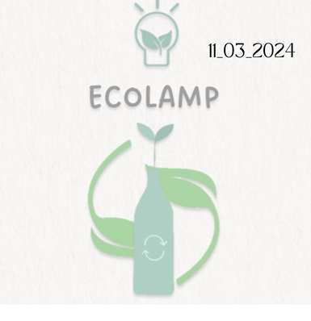

MISIÓN DEL ECOLAMP
La misión de ECOLAMP es ofrecer a tosdos aquellos clientes ambientales una lámpara de material reciclado y que este sea accesible para los clientes, bonito y barato, su misión va dirigida a la reduccion de la contaminación.
VISIÓN DEL ECOLAMP
En ECOLAMP buscamos mejorar las lamparas normales nuestro producto ofrece unos materiales reciclados orgánicos nuestra visión es dar a conocer nuestro producto en diferentes sucursales y que se haga la concistencia de que hay que auyudar nuestro planeta.
VALORES DEL ECOLAMP
Honestidad, responsabilidad, orientación al cliente, calidad, responsabilidad social, diversidad, trabajo en equipo.
